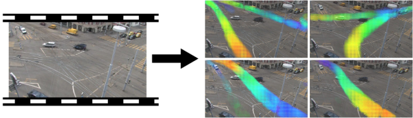
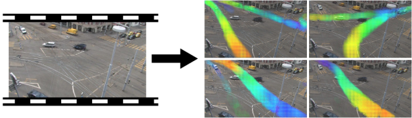

Please wait, while the deck is loading…
 
- {notes}
- chercheur en ML, mais avant en archi log
- geek: des projets à coté, dont deck.js et des isochrones
- enseignant + swc instructor
## {/no-status no-h}
- `$ whoami` {no}
- Software Engineer
- Researcher: machine learning, computer vision
- Teacher: web technologies, computing literacy
- Geek: deck.js slides, isochrones, …

- {notes}
- chercheur en ML, mais avant en archi log
- geek: des projets à coté, dont deck.js et des isochrones
- enseignant + swc instructor
## {/no-status no-h}
- `$ whoami` {no}
- Software Engineer
- Researcher: machine learning, computer vision
- Teacher: web technologies, computing literacy
- Geek: deck.js slides, isochrones, …
# What is Machine Learning? ## Machine Learning Basic Principle - Given a dataset $\\{y_i, x_{i1}, \ldots, x_{ip}\\}_{i=1}^n $ - Optimize the likelihood functionYou are shrewd, skeptical and restrained.
You are independent: you have a strong desire to have time to yourself. You are calm-seeking: you prefer activities that are quiet, calm, and safe. And you are philosophical: you are open to and intrigued by new ideas and love to explore them.
Experiences that give a sense of prestige hold some appeal to you.
You are relatively unconcerned with both tradition and taking pleasure in life. You care more about making your own path than following what others have done. And you prefer activities with a purpose greater than just personal enjoyment.
IBM BlueMix (Watson)
$\mathcal{L} = \sum_d \sum_w \sum_{t_a} n(w,t_a,d) log \sum_z \sum_{t_s} p(w,t_r|z) p(z,t_s|d)$ - Or using a sparse regularization
$\mathcal{L} - \lambda_{sparse} \sum_d \sum_z KL(U || p(ts|z, d))$ {slide} - By using a Gibbs Sampler
$p(W_{ji},at_{ji} | o_{ji} = o, O^{-ji}) = \frac{N^{-ji}\_{obs}(W_{ji}, rt_{ji}, z_{ji}) + \eta(W_{ji},rt_{ji})}{\sum_{w',rt'}\left( N^{-ji}\_{obs}(w', rt', z_{ji}) + \eta(w',rt') \right)}{}$ {slide} // quit à faire ça, pourquoi pas utiliser le "blink" - @anim: %+class:blink: .latex - {notes} - et pourquoi pas utiliser la balise blink d'html pendant qu'on y est # Machine Learning
in the Wild // before we start, a quizz on ML ## Which One of These Services
Uses Machine Learning?
an example motivation ## Challenge: Which Iris Species? {image-full bottom-left darkened /black-bg /no-status} - {notes} - you have to write a program or human procedure - that receives a flower - that should tell it's species among 3 possible ones (close ones) ## Feature Extraction {custommap}
⇒
Sepal length: 5.1 Sepal width: 2.5 Petal length: 4.2 Petal width: 1.0Expected Label: “Iris Setosa”
that computes an *output* for each *new input* 3. profit! {slide} // actually fast to apply usually The machine *learns* to *generalize*
from a limited number of examples,
like humans do. {center slide bordered} ## Different Types of Tasks - Supervised learning: some labels are known {slide} - classification: find the label of an example - regression: find the target value - Unsupervised learning: no labels {slide} - clustering: group things together - pattern mining: find recurrent events - anomaly detection: find “outliers” ## The Principle of “Overfitting” @svg: media/overfitting.svg 800px 500px - @anim: #points | #linear | #piecewise | #ok - {notes} - example: surface of a flat vs price - in the end, there is no best solution ## A Lot of Different Methods - Also called “models” {slide} - linear regression, logistic regression, SVM, kernel SVM, neural networks, k-means clustering, collaborative filtering, bayesian networks, expectation maximization, belief propagation, multiple kernel learning, metric learning, transfer learning, decision trees, gaussian processes, random forests, boosting, ... {pack} - For different contexts {slide} - different tasks // supervised or not, ... - different nature of data // image, ... - different suppositions on the data // clean or not, etc - different amount of data ## Different Ways to Start - Use a product that uses ML {slide} - e.g. adwords, ibm bluemix, … - Use a prediction API {slide} - send your data to the service // need data: input+label - get API to process new inputs - e.g., google pred. API, prediction.io, ... // .io is open source - Dive into machine learning… {slide} ## Into Machine Learning - Using libraries - libraries exist in most languages - most models already implemented - test different methods with different parameters - Learning machine learning {slide} - many online courses // Andrew NG, coursera - get deeper understanding // distinguish real limitations from tool limitations, ... # Does Machine Learning Actually Matter? ## Example: The Netflix Challenge
Machine Learning's Fuel ## data === power {image-full top-right darkened /black-bg /no-status} - {notes} - if you have the data, you rule - wearable devices (all tracking), online services, ... ## Getting Data? {image-full top-right darkened /black-bg /no-status} - {notes} - a good data source is key - one of the main challenges ## Getting Data? - Collect from your services/applications {slide} - Do it yourself {slide} - Pay some people you know {slide} - Use crowd-sourcing,
e.g., Amazon Mechanical Turk (MTurk) {slide} - Find existing datasets (open data, etc) {slide} - Work for/with a “data rich” company {slide} - Create your “intermediation” business {slide} # What Can It Do
For Me # *Search*
Google Search, Bing, etc # *Advertising*
AdWords, etc // core business # *Recommendations*
Netflix, Amazon, Youtube, app Stores, etc # *Text Translation* # *Optical Character Recognition*
(postcodes, checks, book scans, etc) # *Visual Recognition* (objects, plants, animals, etc) # *Face Detection*
*Smile Detection*
(embedded in Cameras) # *Face Identification*
(Picasa, Facebook, etc) # *Kinect Controller* # *Self Driving Cars* # *Voice Recognition*
and Synthesis
(GoogleNow, Siri, Cortana) # *Sound Recognition*
(birds, underwater sounds, safety, etc) # *Fraud Detection*
(Banking, Websites, etc) # *Automated Trading*
… # *Customer/Person Profiling*
BlueMix Watson, etc # *Adaptive Websites*
(automated A/B testing) # The *“Big Data”* Hype ## and much more... {image-full top-left darkened /black-bg /no-status} # Where Will it Stop? ## Singularity? {image-full bottom-left darkened /black-bg /no-status} - {notes} - explain, ten years ago, ..., today (chess, go, atari, ...) - can on draw the graph on the board - don't know, but scenarios - mass automation, jobs? - fight (term), cow (matrix), zoo - augmented human - 5-100 year, media 2040 ## Thanks! Questions? {deck-status-fake-end /minion} twitter: `@remiemonet` web/email: `http://home.heeere.com` Recommended Links: {links} - [comprehensive introduction to ML models](http://www.slideshare.net/DhianaDevaRocha/qcon-rio-machine-learning-for-everyone) - [scikit learn (python)](http://scikit-learn.org/stable/) - ... # Attribution # @chunk: attrib.md
/ − − automatically replaced by the title